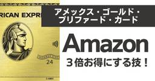
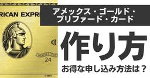
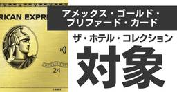
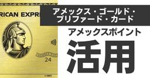
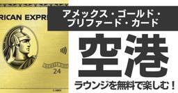
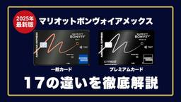
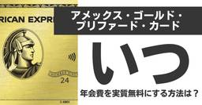

クレカで妄想トラベル
https://www.tokutakublog.com
本ブログ「クレカで妄想トラベル」は、マリオットボンヴォイアメックスカードを最大限に活用するための特化サイトです。豪華なホテル滞在、ポイントの効率的な使い方、特典の最適化、さらには地域ごとのおすすめホテルまで、賢い旅行計画と快適な滞在のための実用的なヒントとアドバイスを幅広く提供します。
フィード

アメックスゴールドプリファードでAmazonはポイント3倍｜登録不要・年10,000pt上限・Amazon Payは半分【2026年】
クレカで妄想トラベル
結論、本当です。Amazonでの支払いは100円につき3ポイントで、ゴールドプリファードなら登録も追加料金も不要（自動登録）です。ただしボーナス分には年間10,000ポイントの上限があり、Amazonなどの対象加盟店で年 […]
3時間前

アメックスゴールドプリファードの作り方｜申込手順を29枚の画像で解説【2026年10月最新】
クレカで妄想トラベル
「入力項目が多くて不安」 「キャンペーンを逃したくない」 と悩んでいませんか？ ※運営者集計（2024年3月〜2026年5月、当サイト経由の発行件数）。手順の実践者数ではありません。 ざっくりとした作り方の流れは次のとお […]
3時間前

アメックスゴールドプリファードのザ・ホテル・コレクション｜100ドル特典と国内11軒
クレカで妄想トラベル
💡 アメックスゴールドプリファードのすべてを知りたい方へ 年会費の元を取る損益分岐点から、審査基準、プラチナ級の豪華サービス（無料宿泊・レストラン）まで、アメックスゴールドプリファードの全貌をまとめた完全解説記事もぜひご […]
3時間前

【2026年最新版】アメックスポイント活用法｜ゴールドプリファード会員必見のおすすめ交換先5選
クレカで妄想トラベル
「アメックスのポイント、結局どこに使うのが一番お得なの？」 アメックスゴールドプリファードで貯まったポイントは、使い道によって価値が3〜5倍も変わります。 2026年8月現在、入会キャンペーンは最大120,000ポイント […]
3時間前

アメックスゴールドプリファードの空港ラウンジ全14空港24ヶ所一覧｜同伴者・使い方【2026年10月】
クレカで妄想トラベル
アメックスゴールドプリファードには、空港ラウンジに関する特典が2種類あります。国内外の対象空港で使える「カードラウンジ」と、世界1,400カ所以上が対象の「プライオリティ・パス」です。 この2つは同伴者の扱いも利用回数も […]
3時間前

【図解】マリオットボンヴォイアメックス完全比較ガイド！一般vsプレミアム17の違いを徹底解説(2026年10月最新)
クレカで妄想トラベル
マリオットアメックスの「一般カード」か「プレミアムカード」のどちらを選ぶべきか悩んでいませんか？ クレジットカード研究歴15年の副業会社員の私が、マリオットボンヴォイアメックス「一般カード」と「プレミアムカード」を17項 […]
2日前
アメックスビジネスゴールドの空港ラウンジ一覧｜国内13空港＋ホノルルが同伴者1名まで無料【2025年6月の対象外15空港に注意】
クレカで妄想トラベル
💡 アメックスビジネスゴールドの全体像を詳しく知りたい方へ 審査基準から豪華なレストラン・旅行特典、ポイントの活用法まで、アメックスビジネスゴールドの年会費以上の価値を引き出す全ノウハウをまとめた完全解説記事もぜひご覧く […]
2日前
マリオットボンヴォイアメックス無料宿泊特典はいつもらえる？予約できない7つの原因も解説
クレカで妄想トラベル
【更新情報】手持ちポイントを上乗せできる「トップオフ」の上限が15,000pt→25,000ptに拡大しました。これにより一般カードで最大75,000pt、プレミアム・カードで最大100,000ptのホテルに宿泊できます […]
2日前

アメックスゴールドプリファードの年会費はいつ引き落とし？2年目は1ヶ月早まります
クレカで妄想トラベル
アメックスゴールド・プリファードのステータスは魅力的ですが、いつ年会費を支払うか、その負担をどう減らせるかが気になる方も多いでしょう。 この記事では『アメックスゴールドプリファードの年会費がいつ引き落とされるか』を、初年 […]
2日前
マリオットボンヴォイアメックスの特典と還元率｜年会費82,500円は回収できるのか検証【2026年10月最新版】
クレカで妄想トラベル
今回は、こんな悩みを解決します。 この記事を読むと『マリオットボンヴォイアメックスカード』を深く理解することができます。 マリオットボンヴォイアメックスカードがおすすめな人は以下のとおりです。 マリオットアメックスカード […]
2日前